Contents
- Exercise 5.2: Hyperelasticity
- Preprocessing
- Postprocessing
- Credits
<
Exercise 5.2: Hyperelasticity¶Problem
The mount is bonded at both ends to steel plates. It will experience axial loads up to 5.5 kN distributed uniformly across the plates.
The cross-section geometry and dimensions are given.
Question
1.To find the axial stiffness of the rubber mount
2.To identify any areas of high maximum principal stress that might limit the fatigue life of the mount.
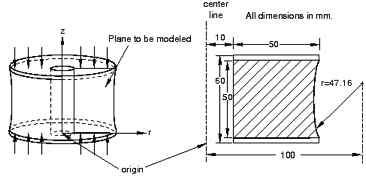
Preprocessing¶Part definition
Create an axisymmetric, deformable, shell part. Name the part Mount, and specify an approximate part size of 0.3. Because of symmetry considerations, only
the bottom half of the mount will be modeled.
When you first enter the sketcher, the axis of revolution is displayed as a green dashed line with a fixed position constraint; your sketch cannot cross this axis.
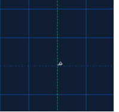
Data files are available.
Sketch the mount geometry
1.Draw an arbitrary rectangle to the right of the axis of symmetry.
Set the horizontal distance between the axis of symmetry and the left edge of the rectangle to 0.01 m.(symmetry line lies at x=0)
The coordinate of two corners: (0.01,0) (0.06,0.03)
2.Sketch a circle using the Create Circle: Center and Perimeter tool.
a. Set the horizontal distance between the axis of symmetry and the center of the circle to 0.1 m.
b. Set the vertical distance between the center of the circle and the top-right vertex of the rectangle to 0 m. Center: (0.1,0.03)
c. Set the vertical distance between the perimeter point (where the circle snaps to the rectangle) and the bottom-right vertex of the rectangle to 0.005 m.
point on the circle: (0.06,0.005)
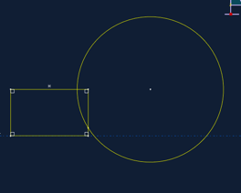
- Use the
Auto-Trim tool  to remove the excess portions of the sketch. to remove the excess portions of the sketch.
Finish the part definition, Done.
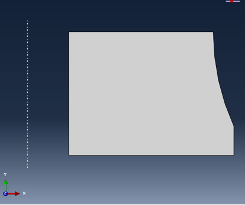
Material properties: hyperelastic model for the rubber
You have been given some experimental test data for the rubber material used in the mount. Three different sets of test data
a uniaxial test, a biaxial test, and a planar (shear) test—are available.
Note: Volumetric test data are not required when the material is incompressible (as is the case in this example).
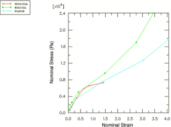
Uniaxial test data |
Biaxial test data |
Planar test data |
Stress (Pa) | Strain |
5.40E+04 | 0.038 |
1.52E+05 | 0.1338 |
2.54E+05 | 0.221 |
3.62E+05 | 0.345 |
4.59E+05 | 0.46 |
5.83E+05 | 0.6242 |
6.56E+05 | 0.851 |
7.30E+05 | 1.4268 |
|
Stress (Pa) | Strain |
8.90E+04 | 0.02 |
2.55E+05 | 0.14 |
5.03E+05 | 0.42 |
9.58E+05 | 1.49 |
1.70E+06 | 2.75 |
2.41E+06 | 3.45 |
|
Stress (Pa) | Strain |
5.50E+04 | 0.069 |
3.24E+05 | 0.2828 |
7.58E+05 | 1.3862 |
1.27E+06 | 3.0345 |
1.78E+06 | 4.0621 |
|
When define a hyperelastic material using experimental data, must specify the strain energy potential that you want to apply to the data.
ABAQUS uses experimental data to calculate the coefficients necessary for the specified strain energy potential.
To define and evaluate hyperelastic material behavior:
1.Create a hyperelastic material named Rubber. In this example a first-order, polynomial strain energy function is used to model the rubber material.
2.In the Edit Material dialog, select Mechanical→ Elastic→Hyperelastic;
3.Material type is : Isotropic
4.Select Polynomial from the Strain energy potential list in the material editor. Enter the test data given above using the Test Data menu.
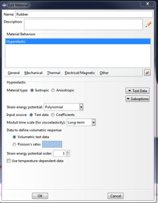

To visualize the experimental data, right click on the table for any of the test data and select Create X–Y Data. And you can check it in the Results tree.
5.In the Model Tree, right click on Rubber underneath the Materials container. Select Evaluate from the menu that appears to perform the standard unit-element tests (uniaxial, biaxial, and planar). Specify a minimum strain of 0 and a maximum strain of 1.75 for each test. In the Strain Energy Potentials Tab, evaluate only the first-order polynomial strain energy function(Mooney-Rivlin).
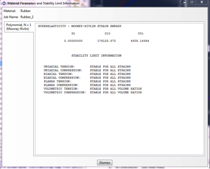
Completing the material and section definitions and assigning section properties
Create another material: steel is modeled with linear elastic properties only ( E = 200 × 109 Pa, v = 0.3).
Create two homogeneous solid section definitions: one named RubberSection that refers to the rubber material and one named SteelSection that refers to the steel material.
Before assigning section properties, partition the part into the two regions using the Partition Face: Sketch tool.
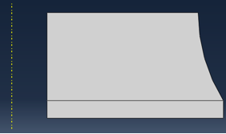
- In the Sketcher, draw a horizontal line extending from the point where the circular arc intersects the right edge to any point past the left edge of the sketch.
- The upper region is the rubber mount, while the lower region represents the steel plate.
Assign the section definitions to each region.
Creating an assembly and a step definition
Create a dependent instance of the part.
Define a single static, general step named Compress mount.
- Toggle on
Nlgeom.
- Set the
total step time to 1.0 and the initial time increment to 0.01.
For the purpose of restricting output, create a geometry set named Out at the vertex located at the lower-left corner of the steel plate region.

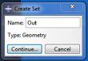
Output requests:
1, Write the preselected variables and nominal strains as field output to the output database file every increment.
(Toggle on the NE, Nominal strain in the Filed out put Request Edit)
2, Write the displacements of set Out to the output database file as history
data so that the stiffness of the mount can be calculated.
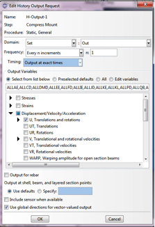
Applying loads and boundary conditions
Specify boundary conditions for the region on the symmetry plane (the top)
(U2 = 0 or YSYMM would be equivalent in this case).
The mount must carry a maximum axial load of 5.5 kN, the magnitude of the
pressure is given by 5E5 Pa (apply at the bottom plane)
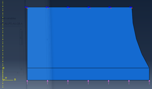
Creating the mesh and the job
1.Use Linear, axisymmetric Stress, hybrid formulation elements (CAX4H) for the rubber mount.
2.Assign mesh control structured quadrilateral mesh.
3.Seed the part by specifying the number of elements along the edges (by selecting Seed Edge By Number or the tool).
Specify 30 elements along each horizontal edge, 14 elements along the vertical and curved edges of the rubber, and 1 element along the vertical edges of the steel.
4.Create mesh
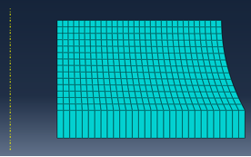
5.Create a job named Mount. Give the job the following description: Axisymmetric mount analysis under axial loading.
6.Save your model in a model database file, and submit the job for analysis.
|
Postprocessing¶Calculating the stiffness of the mount
To determine the stiffness of the mount by creating an X–Y plot of the displacement of the steel plate as a function of the applied load.
A. To create a history curve of vertical displacement and swap the X- and Y-axes:
- In the Results Tree, expand the
History Output container underneath the output database named Mount.odb.
- Locate and select the vertical displacement
U2 at the node in set Out.
- Right click, and select
Save As from the menu that appears to save the X–Y data. The Save XY Data As dialog box appears.
- Type the name
DISP, and click OK.
- In the Results Tree, double-click
XYData.
The Create XY Data dialog box appears.
- Select Operate on XY data, and click
Continue.
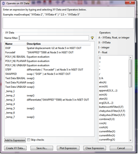
- In the
Operate on XY Data dialog box, from Operators, select swap(X).
swap( ) appears in the text field at the top of the dialog box.
- In the
XY Data field, double-click DISP. The expression swap( "DISP" ) appears in the text field at the top of the dialog box.
- Save it as
SWAPPED
Next we need a curve showing force-displacement. In this simulation the force applied to the mount is directly proportional to the total time, we only need to multiply the original curve to the magnitude of the load (5.5 kN).
B. To multiply a curve by a constant value:
- In the
Operate on XY Data dialog box, click Clear Expression.
- In the
XY Data field, select SWAPPED.
The expression "SWAPPED" appears in the text field at the top of the dialog box.
- Multiply the data object in the text field by the magnitude of the applied load by entering
*5500.
- Save the multiplied data as
FORCEDEF
Now we have created a curve with the force-deflection characteristic of the mount To get stiffness, just differentiate the curve FORCEDEF.
C. To obtain the stiffness:
- In the
Operate on XY Data dialog box, clear the current expression.
- From the
Operators listed, select differentiate(X).
differentiate( ) appears in the text field at the top of the dialog box.
- In the
XY Data field, select FORCEDEF.
The expression differentiate( "FORCEDEF" ) appears in the text field.
Save the differentiated data as STIFF
Contouring the maximum principal stress
Now we want to see where the principal stress is high.
To contour the maximum principal stress:
- Select
Result ->Field Output at the main menu
- At output variables, select
S. At invariants, select Max. Principal.
Now we only care about Rubber.
- In the Results Tree, expand the
Materials container underneath the output database file named Mount.odb.
- Right click on
RUBBER, and select Replace from the menu that appears to replace the current display with the selected elements.
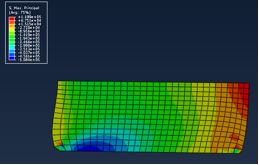 |
Credits
Neal Davis, Ruizhi Li, and Binyue Hou developed these materials for Computational Science and Engineering at the University of Illinois at Urbana–Champaign.
 This content is available under a Creative Commons Attribution-NonCommercial 4.0 Unported License. This content is available under a Creative Commons Attribution-NonCommercial 4.0 Unported License.

|